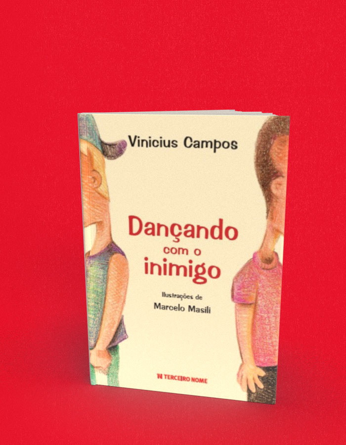

Dançando com o inimigo
A compra acontece no site da livraria, em uma nova aba. Consulte lá os preços e a disponibilidade. Procure pelo título ou ISBN deste livro.
- Autoria / créditos
- Vinicius Campos
- ISBN
- 9788578161330
- Páginas
- 64
- Formato
- 14 cm x 19,5 cm
- Acabamento
- brochura
Sobre o livro
Bruno e Xande são garotos da mesma idade que moram na mesma rua e frequentam a mesma escola. Só que as semelhanças acabam aí. Bruno pratica balé e tem uma família descontraída que adora dançar e festejar. E Xande, fã de lutas e artes marciais, mora em uma casa que lembra um quartel onde só se ouve ordens e gritos de guerra. Mas um dia o destino dos dois colegas se cruza e Xande descobrirá como respeitar as diferenças. Apesar da aproximação traumática no início, eles acabam se tornando amigos.
Embora seja uma ficção infantojuvenil, Dançando com o inimigo traz à tona uma realidade ainda muito presente no Brasil e no mundo, a do bullying , e como lidar com ela.
Quando criança, Vinicius Campos dizia que queria ser palhaço. Acabou virando escritor, jornalista e ator — inclusive é apresentador do Disney Channel . Em 2005 decidiu aprender espanhol em Buenos Aires e se apaixonou pela cidade, onde foi ficando até se radicar de vez. Mas quando a saudade aperta, volta ao Brasil para visitar a família e os amigos. Vini também atua em teatro, já participou de vários comerciais de TV e é autor de livros de vários livros de sucesso.
← Voltar ao catálogo